A cereal bowl jigger mold made using 3D printing
Beer Bottle Master Mold via 3D Printing
Better porosity for Brown Sugar Savers
Build a kiln monitoring device
Celebration Project
Coffee Mug Slip Casting Mold via 3D Printing
Comparing the Melt Fluidity of 16 Frits
Cookie Cutting clay with 3D printed cutters
Evaluating a clay's suitability for use in pottery
Make a mold for 4-gallon stackable calciners
Make Your Own Pyrometric Cones
Make your own sieve shaker to process ceramic slurries
Making a high quality ceramic tile
Making a Plaster Table
Making Bricks
Making our own kiln posts using a hand extruder
Medalta Ball Pitcher Slip Casting Mold via 3D Printing
Medalta Jug Master Mold Development
Mold Natches
Mother Nature's Porcelain - Plainsman 3B
Mug Handle Casting
Nursery plant pot mold via 3D printing
Pie-Crust Mug-Making Method
Plainsman 3D, Mother Nature's Porcelain/Stoneware
Project to Document a Shimpo Jiggering Attachment
Roll, Cut, Pull, Attach Handle-making Method
Slurry Mixing and Dewatering Your Own Clay Body
Using milk as a glaze
Testing a New Load of EP Kaolin
We use EPK in production clay bodies and sell it to customers for their use in glazes and bodies. In the past many manufacturers just accepted materials as they arrived, assuming quality and consistency with previous shipments. But times have changed, large companies have gobbled up the smaller ones and suitability and consistency for ceramics are no longer a focus for some. Other companies are struggling to compete with old equipment and mining issues. Even where materials are meant for ceramics we are not convinced that suppliers even measure important properties like plasticity, drying shrinkage, fired maturity, fired color, etc. Sometimes we measure these things just to be able to judge a material's suitability for us, other times we have to react and adjust recipes in which it is used (or warn customers of changes).
Related Information
880 bags of kaolin arrive. First step: Record the date code.

This picture has its own page with more detail, click here to see it.
A shipment EP Kaolin has arrived for use in some of our production porcelain and stoneware bodies. Of course, this needs to be tested before being put into product. But how? The first step is to create a new recipe record in my Insight-Live account, and find their production date code stamp on the bag. Hmmm. It does not have one! OK, then I need to record the date on which we received it. We need to save a bag on every pallet and sieve 50 grams through 100 mesh (to spot contamination). Then we'll make test bars (of all the samples mixed) to fire across a range of temperatures (to compare fired maturity with past shipments). We do a drying performance disk also to assess soluble salts.
50 grams of EPK powder ready for sieve analysis
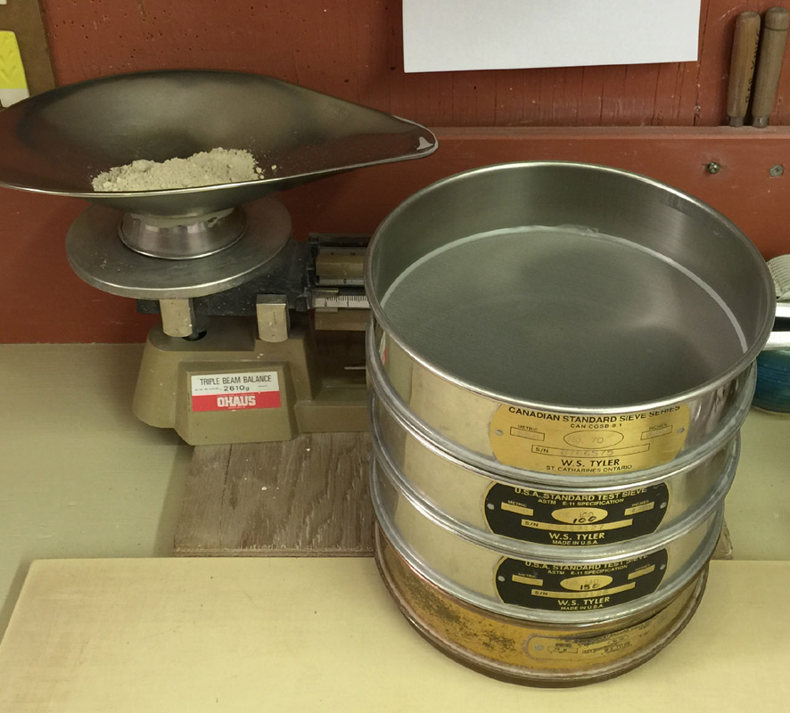
This picture has its own page with more detail, click here to see it.
We are using the 80, 100, 150 and 200 mesh screens in our version of the SIEV test. In this wet screen particle size distribution test we will wash the material through them (while fine powders like this do not pass sieves that have microscopic openings water will do it no problem).
Pouring the EPK powder into water first
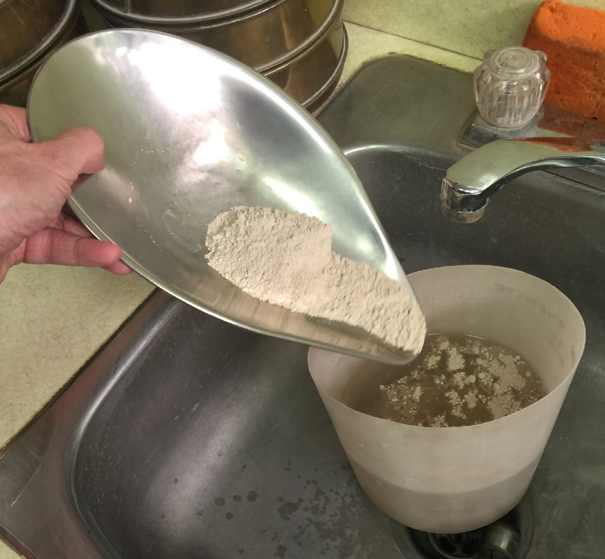
This picture has its own page with more detail, click here to see it.
Letting the powder slake in a generous amount of water first creates a thin slurry that will pour through the sieves instantly. Since the material has a very fine particle size only a few will be trapped by the sieves.
Washing the EPK slurry through a 200 mesh screen
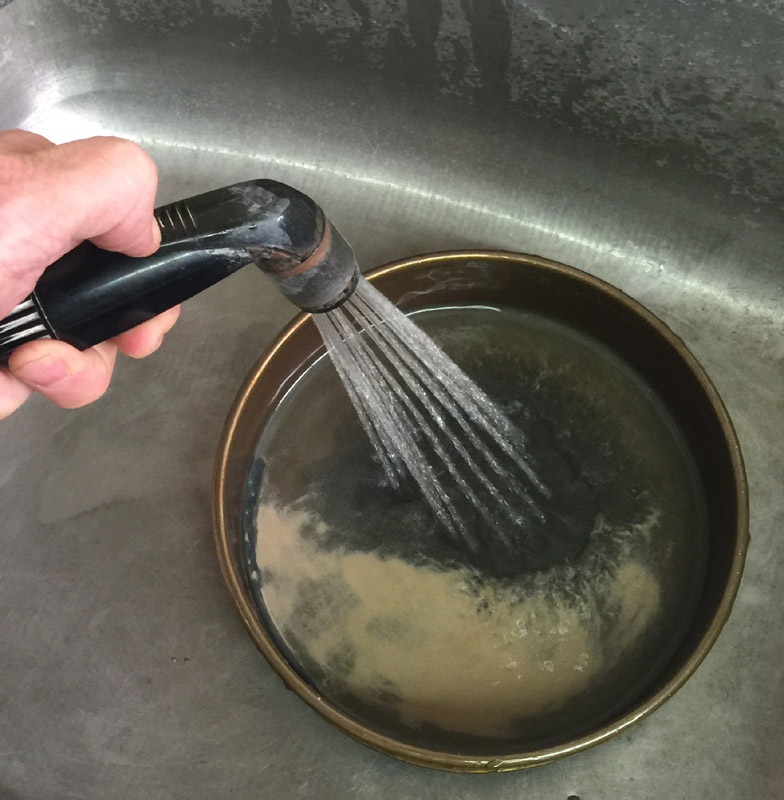
This picture has its own page with more detail, click here to see it.
When doing a seive analysis we first wash it all through the finest sieve to remove all minus 200 mesh material. If this is not done the bottom screens can blind (and the whole stack fills up with water).
Recovering the +200 mesh material on the finest sieve
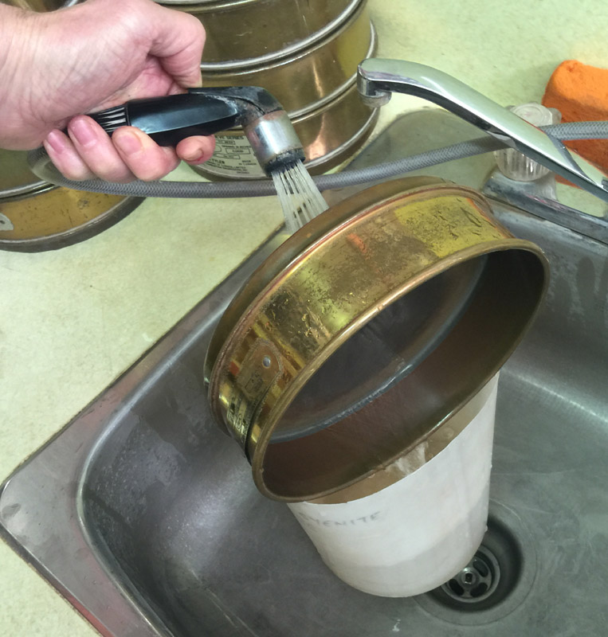
This picture has its own page with more detail, click here to see it.
To recover the material on the screen we wash it backwards into a container (turning the sieve to catch it all).
Washing all the +200 mesh clay through the stack of sieves
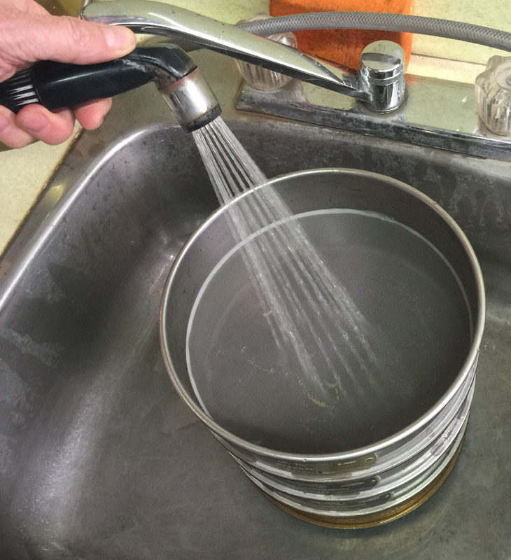
This picture has its own page with more detail, click here to see it.
The recovered oversize from the 200 mesh screen is being washed through the whole stack (from coarsest to finest testing sieves). For each, we wash to material together for easier removal and weighting when dry.
Drying the sieves after clay powder has been washed through
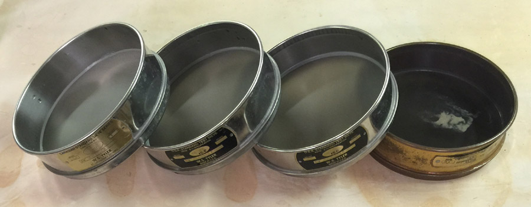
This picture has its own page with more detail, click here to see it.
Set them on edge like this (on a plaster table in this case) speeds drying.
Weighing oversize material from a test sieve
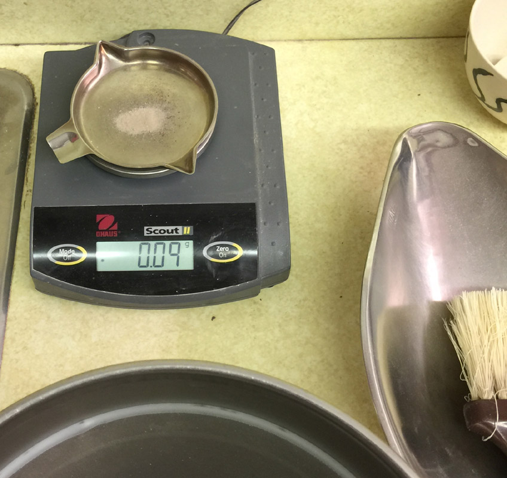
This picture has its own page with more detail, click here to see it.
We remove the oversize from each sieve (using a stiff brush) and weigh on this scale (accurate 1/100th of a gram). The weights are entered as testdata for the SIEV test in Insight-live.com).
Slurrying EPK to prepare for dewatering
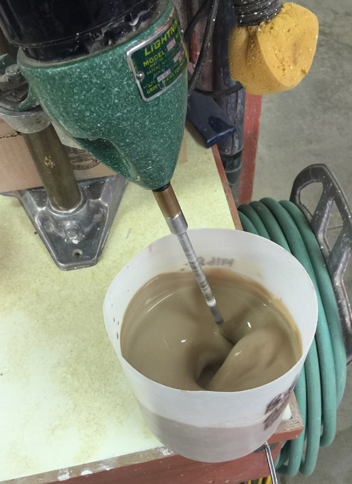
This picture has its own page with more detail, click here to see it.
EPK slurry has been poured onto plaster table for dewatering
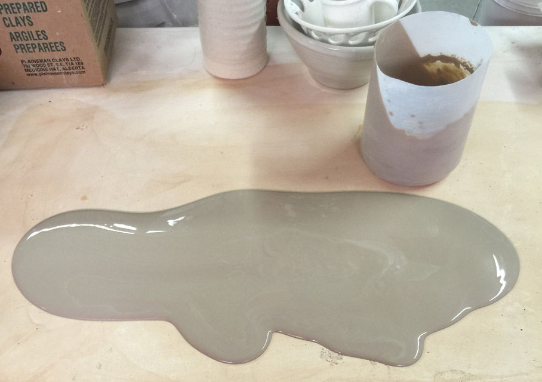
This picture has its own page with more detail, click here to see it.
EPK slurry is sticky and dewaters slowly. Very slowly. This is actually a signature aspect of its utility and something we take note of for different batches. After a couple of hours water will be low enough to be able to knead the material.
The EPK slurry was dried enough for removal from the plaster bat
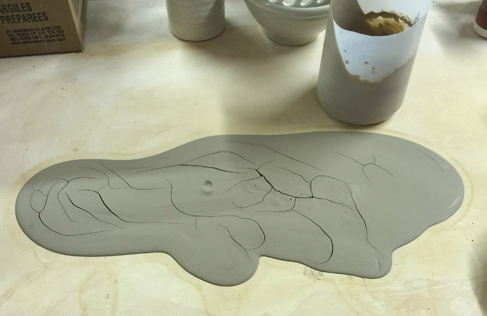
This picture has its own page with more detail, click here to see it.
It is still quite soft and can be kneaded easily. But to stiffen it a little more I leave it on the table longer, kneading and flattening it out each time.
Plastic EPK slab ready for cutting into test bars
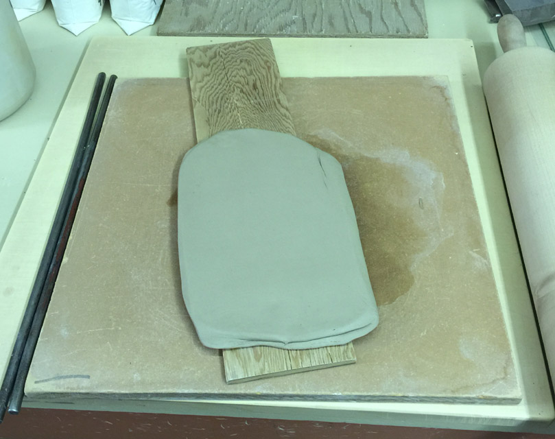
This picture has its own page with more detail, click here to see it.
I have rolled it to 3/8 in thickness and placed it on a 11.5cm wide board (as specified by the SHAB test procedure). EPK is plastic enough that the slab can be handled without danger of it falling apart. And it can be cut without issues of tearing of the edges.
EPK test specimens made (SHAB bars, LDW bar, DFAC disk)
They are ready for drying
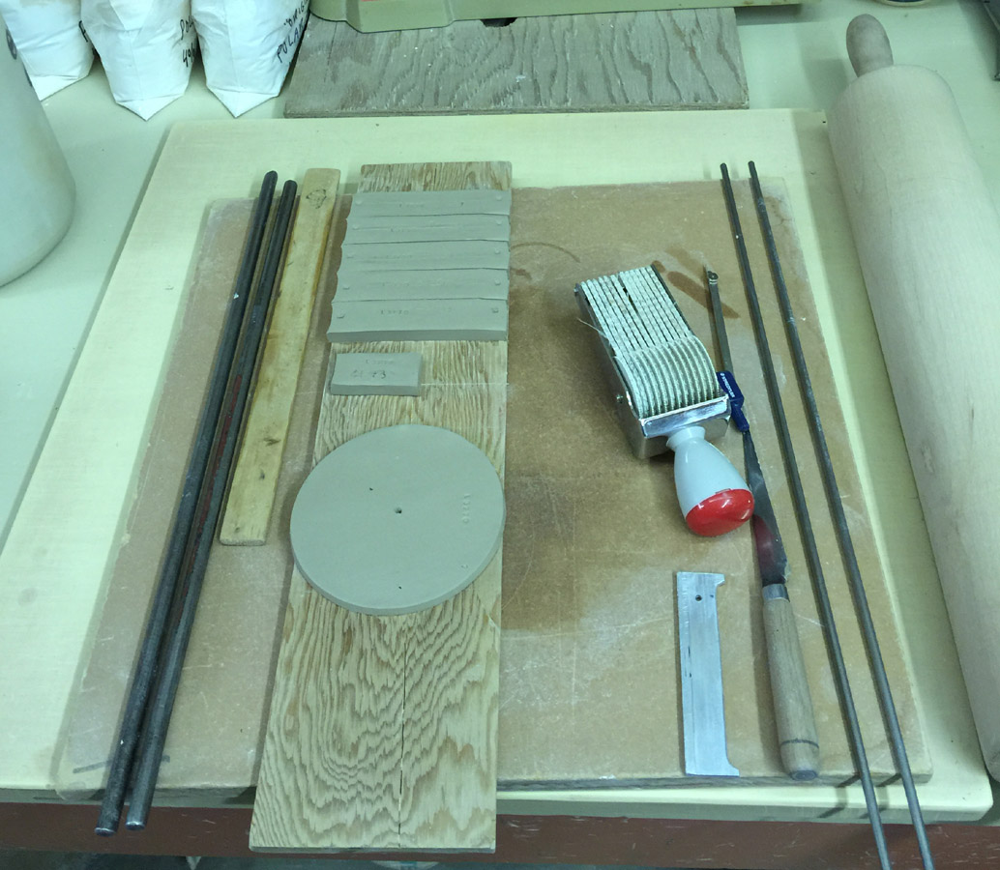
This picture has its own page with more detail, click here to see it.
I have cut bars for an SHAB test, they are 1 inch wide (for firing to cone 7, 8, 9, 10 and 10R). A smaller half-length bar for the LDW test has been made and weighed. The disk is 12cm in diameter and 3/16in thick and used for the DFAC test.
EP Kaolin test bars being removed from the drier
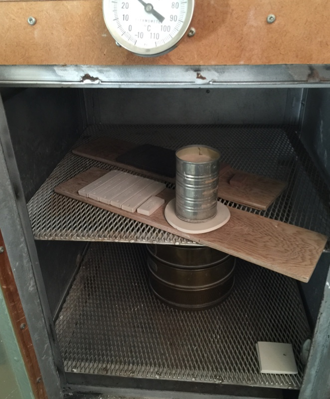
This picture has its own page with more detail, click here to see it.
The 5 bars have a 10cm length marker than can now be measured and numbers entered into Insight-live (for the SHAB test);. The smaller bar for the LDW test can now be weighed (and that entered also). The disk has curled (because EPK has a high drying shrinkage), the nature of the crack can be assessed and its value entered for the DFAC test.
Measuring the length of an EPK test bar to get its drying shrinkage

This picture has its own page with more detail, click here to see it.
A 10cm mark was made in the plastic bar during preparation (we dip the ends of the marker-tool into talc powder, as a parting agent, to get a crisp mark). These bars are made from the same clay, a shipment of EPK kaolin, each bar is measured dry, fired at its assigned temperature and measured again (to supply data for the SHAB test). As fired length numbers become available and are entered into the recipe record, Insight-live is able to calculate and display more of the drying and fired shrinkages. Values for the DFAC test disk and the LDW test bar can also be assessed an entered at this time.
An effective test to judge the plasticity of a shipment of EP Kaolin
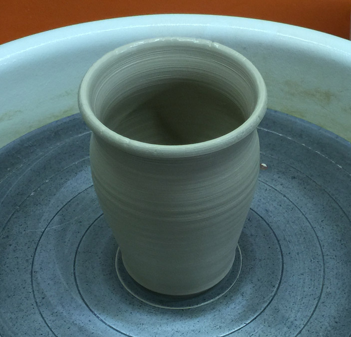
This picture has its own page with more detail, click here to see it.
This shipment of light EPK (there are two versions, light and dark) is just barely plastic enough to make this cylinder with a slight belly. Notice the splits on the rim, these are indicative of the shortness (low plasticity). The cohesiveness of the material, as much as plasticity, gives it a toughness to survive the stresses of throwing (an unique aspect of EPK).
EPK fired test bars, data, certificate and the data

This picture has its own page with more detail, click here to see it.
All of the test bars have been fired in this project to characterize a shipment of EPK (from cone 7-10 and 10R bottom to top). The dry and fired lengths and the dry and fired weights testdata were measured and entered into an Insight-live account. The results are shown in the red-titled columns (the drying shrinkage, firing shrinkage, absorption). The weights from the sieve analysis are also shown. The calculation of water content of the plastic material (a very high 33.4%) and LOI (14.5%). I also like to take and upload a photo of the oversize material from the sieve analyses (to compare with past shipments) and of their manufacturer's certificate of analysis.
Notice the data that the manufacturer considers important to include on the certificate that they send with the shipment: Particle size, particle surface area and moisture content. Of course, they would not be able to do all the tests I do. But the product is affected by the properties of the material, so I have to test.
Protect your reputation as a clay body manufacturer.
Unready Freddie is not monitoring incoming clays!

This picture has its own page with more detail, click here to see it.
A kaolin shipment just came in. "UnReady Freddie" is panicking. He thinks he remembers that products made with the last shipment were lacking plasticity and the fired color was off. He is going to have to come up with different lame excuses for complaining customers this time.
"Ready Freddie" has Insight-Live and has collected years of data on incoming shipments in one searchable place. He knows what to check on each and has fired bars, in-mix tests, particle size checks, data sheets, lots of pictures, notes, etc. He also has traceability - he knows what material batch went into what product. He works with production to do material lot tracking and with purchasing to keep suppliers aware he is testing. Because Ready Freddie knows how materials vary he can compensate recipes and processes so customers see a consistent product.
UnReady Freddie has a few spreadsheets somewhere. But he is busy with other things. Who do you want in charge of product consistency (and company reputation)? Here is what to do next: Have your technician study the page "Testing a New Load of EP Kaolin" (link below). You will be hearing from him/her soon.
Inbound Photo Links
|
Is your clay supplier testing incoming materials? Monitoring the properties of clay bodies they sell? |
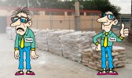 20 Skids of Material Just arrived Fatique Freddie is overwhelmed! |
Links
| Materials |
EP Kaolin
A kaolin that gels slurries (thus handy to suspend ceramic glazes). It is plastic and fires white enough that it is also valuable in porcelain bodies. |
| Tests |
Shrinkage/Absorption Test
SHAB Shrinkage and absorption test procedure for plastic clay bodies and materials |
 PayPal | No tracking, No ads, No paywall, No transient content! Just organized, concise information constantly updated and improved. Was this helpful? Consider supporting me. |
| By Tony Hansen Follow me on        |  |
Got a Question?
Buy me a coffee and we can talk 

https://digitalfire.com, All Rights Reserved
Privacy Policy